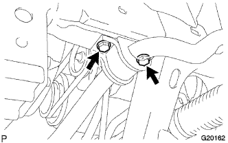

ПЕРЕДНИЙ СТАБИЛИЗАТОР ПОПЕРЕЧНОЙ УСТОЙЧИВОСТИ (для моделей без KDSS) > СНЯТИЕ |
| 1. СНИМИТЕ ПЕРЕДНЕЕ КОЛЕСО |
| 2. СНИМИТЕ НИЖНЮЮ НАКЛАДКУ ПЕРЕДНЕГО БАМПЕРА |
Освободите фиксатор, выверните 5 болтов и снимите нижнюю облицовку переднего бампера.
| 3. СНИМИТЕ ЗАЩИТУ КАРТЕРА ДВИГАТЕЛЯ № 1 В СБОРЕ |
 |
Выверните 4 болта.
Отсоедините защиту картера двигателя от кузова автомобиля, как показано на рисунке.
| 4. СНИМИТЕ СКОБУ ЭЛЕМЕНТА ПЕРЕДНЕЙ ПОДВЕСКИ В СБОРЕ |
 |
Выверните 6 болтов и снимите 2 скобы элемента подвески с передней рамы в сборе.
| 5. СНИМИТЕ ЛЕВУЮ СТОЙКУ ПЕРЕДНЕГО СТАБИЛИЗАТОРА |
Отверните 2 гайки и снимите левую стойку переднего стабилизатора в сборе.
| 6. СНИМИТЕ ПРАВУЮ СТОЙКУ ПЕРЕДНЕГО СТАБИЛИЗАТОРА |
| 7. СНИМИТЕ ЛЕВЫЙ КРОНШТЕЙН ПЕРЕДНЕГО СТАБИЛИЗАТОРА № 1 |
|  |
Выверните 2 болта и снимите левый кронштейн переднего стабилизатора № 1.
| 8. СНИМИТЕ ПРАВЫЙ КРОНШТЕЙН ПЕРЕДНЕГО СТАБИЛИЗАТОРА № 1 |
| 9. СНИМИТЕ ВТУЛКУ ПЕРЕДНЕГО СТАБИЛИЗАТОРА № 1 |
Снимите 2 втулки переднего стабилизатора № 1.
| 10. СНИМИТЕ ШТАНГУ ПЕРЕДНЕГО СТАБИЛИЗАТОРА |